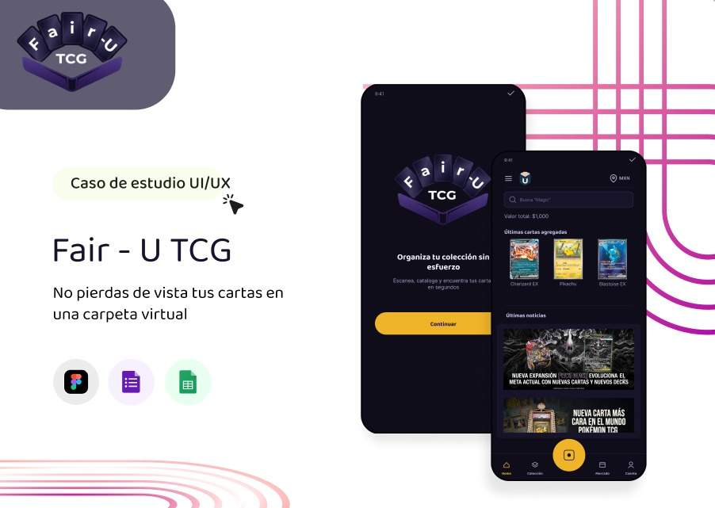

Fair-U TCG
Problema: Los jugadores y coleccionistas de TCG no llevan un inventario confiable de sus cartas — el 82% había comprado una carta que ya tenía por falta de un buen registro.
Qué hice: Lideré el proceso completo de Design Thinking: investigación con entrevistas y encuestas, user personas, mapa de empatía, arquitectura de información, wireframes, UI kit y dos rondas de pruebas de usabilidad. También desarrollé el concepto y el logo de la marca.
Resultado: Un prototipo validado que redujo en 50% los usuarios perdidos durante el flujo de exploración, con mejoras iterativas confirmadas en la segunda ronda de testing.
- UX Research
- Figma
- UI Design